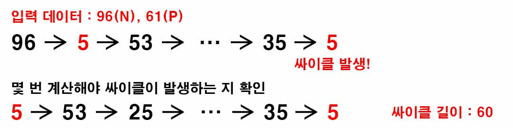

백준 2526. 싸이클
- https://www.acmicpc.net/problem/2526
-
문제 :
두 자연수 N과 P를 가지고 다음 과정을 거쳐서 나오는 수를 차례대로 출력해보자. 처음 출력하는 수는 N이고, 두 번째 이후 출력하는 수는 N을 곱하고 P로 나눈 나머지를 구하는 과정을 반복하여 구한다. 즉, 먼저 N에 N을 곱하고, 이 수를 P로 나눈 나머지를 두 번째에 출력한다. 다음에는 이 나머지에 N을 곱하고 P로 나눈 나머지를 출력한다. 다음에는 이 나머지에 N을 곱한 후 P로 나눈 나머지를 출력한다. 이 과정을 계속 반복해보면 출력되는 에는 반복되는 부분이 있다.
예를 들어서, N = 67, P = 31인 경우를 생각해보자. 처음 출력되는 수는 67이고, 두 번째로 출력되는 수는 67×67 = 4489를 31로 나눈 나머지 25이다. 다음에는 25×67 = 1675를 31로 나눈 나머지 1, 다음에는 1×67 = 67을 31로 나눈 나머지 5가 차례대로 출력된다. 다음에는 5×67 = 335를 31로 나눈 나머지 25가 출력되는데, 이 수는 이미 이전에 출력된 수이다. 이 과정을 그림으로 보이면 다음과 같다.

즉 이 과정을 반복하면, 처음 67을 제외하면 3개의 수 25, 1, 5가 계속 무한히 반복되게 된다. 또 다른 예로, N = 9, P = 3을 가지고 시작하면, 9×9 = 81이고 3으로 나눈 나머지는 0이며, 0×3 = 0이고 3으로 나눈 나머지도 0이기 때문에 처음 9를 제외하면 0이 무한히 반복되게 된다.
N과 P를 입력받아 위와 같이 정의된 연산을 수행하였을 때, 반복되는 부분에 포함된 서로 다른 수의 개수를 구하는 프로그램을 작성하시오. -
입력 :
첫째 줄에 처음 시작하는 두 자연수 N과 P가 공백을 사이에 두고 주어진다. -
출력 :
첫째 줄에 반복되는 부분에 포함된 서로 다른 수의 개수를 출력한다. -
제한 :
● 1 ≤ N ≤ 1,000
● 2 ≤ P ≤ 97 -
풀이 :
문제와 같은 계산을 반복하는 과정을 거쳤을 때 어느 순간부터 반복해서 나오는 수들이 있는 데 그 수들의 개수를 구하는 문제이다.
계산식을 통해 나온 수를 저장할 배열을 만든 뒤 계산을 반복하는 과정해서 한번 저장했던 수가 나오면 그 수에서 다시 한바퀴 돌아올 때까지 몇 번 계산을 해야하는 지 구해는 방식을 사용헀다.

P는 문제에서 2이상 97이하이기 때문에 배열은 넉넉하게 100까지만 만들어도 된다.